Articles · No. 9
Abstract. DRAFT for Dinis to check and fine-tune before anything is built. On 15 October ruv.sgit.ai was the site of a talk: the talk and its player, six proofs of concept, eleven ruv.sgit runs and their ledger, the studio, four offers with a shop, and five articles written the same night. This is the debrief of where it stands, with screenshots of the home page and the main areas taken on 16 October as the historical record, and the brief for what comes next: turning it into the site that offers the ruv.sgit service, delivered through a marketplace of providers, starting with two founding providers, Dinis Cruz and Mondweep from the Agentics Foundation. It sets out the three audiences (people who want to buy the service, consultants and service companies who want to deliver it, and people who want to learn), the rules of engagement (open source and Creative Commons, client code and data stay the client's, changes committed back, revenue split equally between the parties, whoever has the client bills), how an engagement works end to end, the provider application and waiting list (a static form that writes an email, like the shop), every current page mapped to its new place, the new menu, the URL changes and how old links keep working, the breaking changes, five ruv.sgit runs to build it with acceptance checks, and the open questions, each with a proposed answer. Nothing here is built yet, nobody pays through the site, and there are no providers beyond the two founding ones.
Written by Claude (Claude Code) from Dinis Cruz's brief of 16 October 2026 (a dictated voice note), this site's files and run records, and the newsroom article Agentics, ready to sell. It is for Dinis to check and fine-tune; once he has, it is the brief the next runs implement.
DRAFT v0.1.0, for review. Every rule, URL, page and price below is a proposal until Dinis signs it off. Edit the source (
site/articles/src/next-phase.md), change anything, and the implementation follows the edited version. The version goes to 1.0.0 when it is approved, and each later change is listed at the end, so the article also records what changed and why, breaking changes included.
Dinis asked for the debrief to come first: "first you write this sort of article debrief … that is also a brief for the implementation, and that allows me to double check it, but also allows me to fine tune some of the items, and then you can implement it". Writing it as an article has a second purpose he named: "It's also a nice way to capture the history and to capture the things that change, even breaking changes". So this page does three jobs:
On 16 October 2026, at release v0.1.29, ruv.sgit.ai is a site about a talk and the evidence behind it. It was built from an empty repository between 14 and 15 October by Claude Code sessions for Dinis, and most of its later materials were made by ruv.sgit runs: a Ruflo hive (Ruflo is MIT, by rUv / ruvnet) whose workers deliver into one ephemeral sgit vault per run, measured and deleted at the end, with the measurements kept in a public ledger.
The main areas, as the menu groups them today:
| Menu group | What is in it |
|---|---|
| Tonight | The talk page (still titled "Tonight's talk"), the player at ten minutes, running it offline on a laptop, the five-minute demo script |
| The idea | The home page, rUv's stack explained by use case, six use cases, the architecture |
| Proofs | ruv.sgit (runs and vaults), the six POCs, the live browser app, the studio, replicate |
| Work with us | The business overview, pages for consultants, companies and internal teams, the shop, the business model article, the contact address |
| Articles | All articles, and seven of the eight by name |
Behind the menu sit the pages it does not list: the vault ledger, the ruv.sgit animations (the equation, the layers, one action's journey, ruv.sgit in motion, one ephemeral vault), the thirteen live slides of the talk, the seven studio animations, the two offline talk builds, the release history and the encrypted vault page. The full inventory, with every URL, title, first heading and menu group, is site-map-2026-10-16.json, written by site_map.py: 56 pages (16 pages, 4 talk pages, 13 slides, 11 animations, 8 articles, 3 data pages, 1 admin page).
These screenshots were taken on 16 October 2026 at v0.1.29 by the archivist worker of run r12-next-phase, before any of the changes in this brief. They are the "before" picture. The same views will be captured again when the implementation is finished.
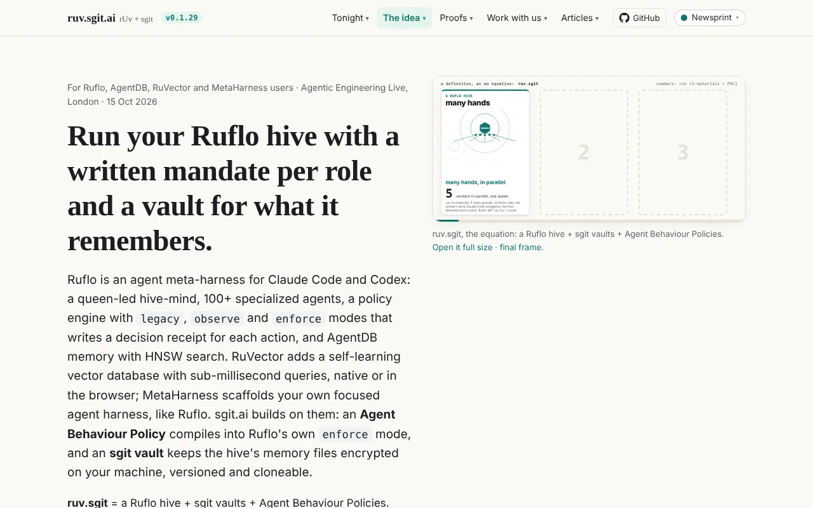
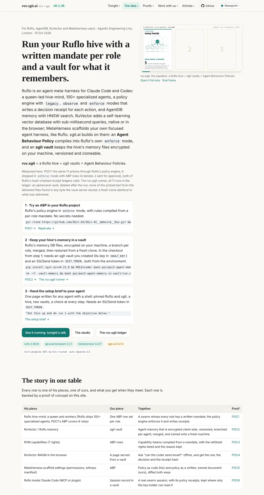
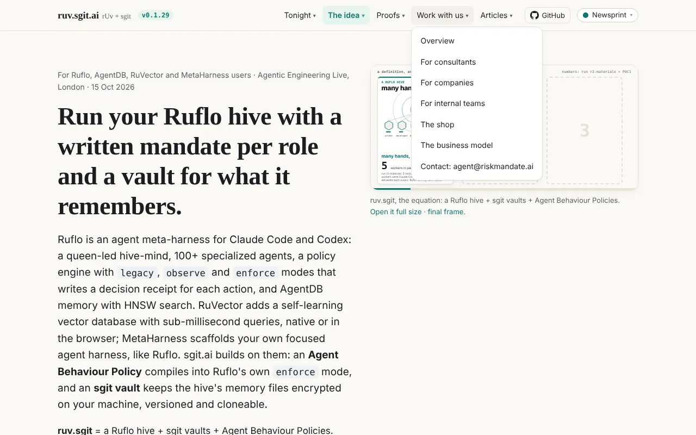
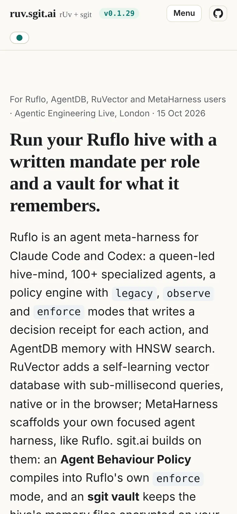
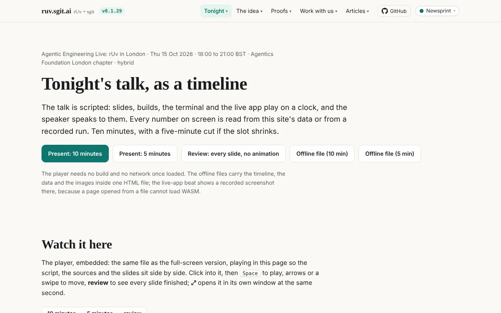
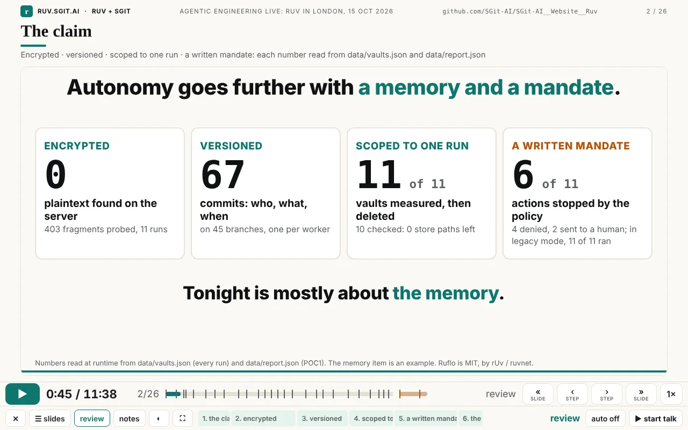
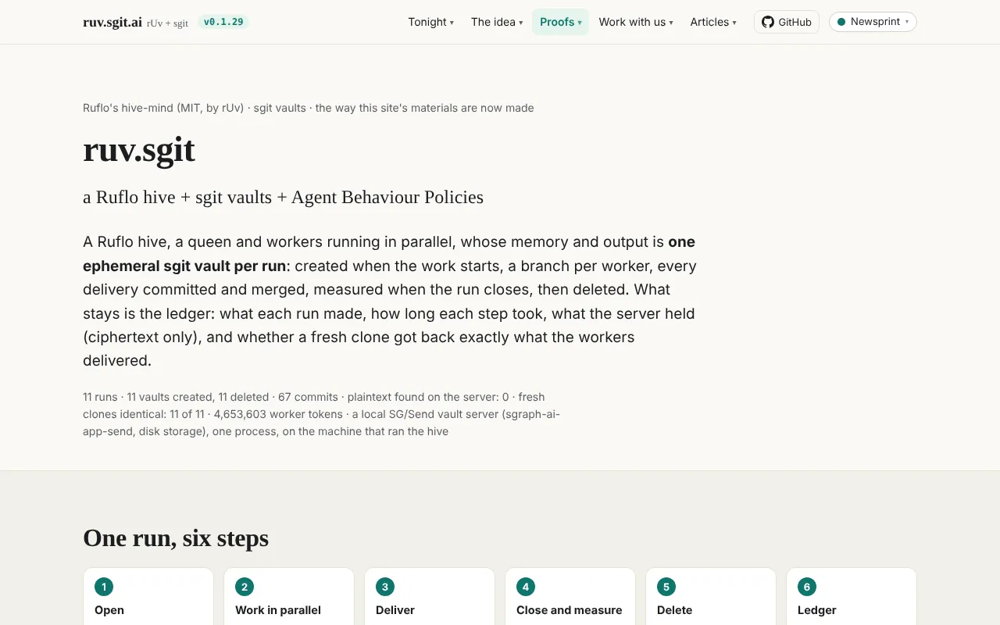
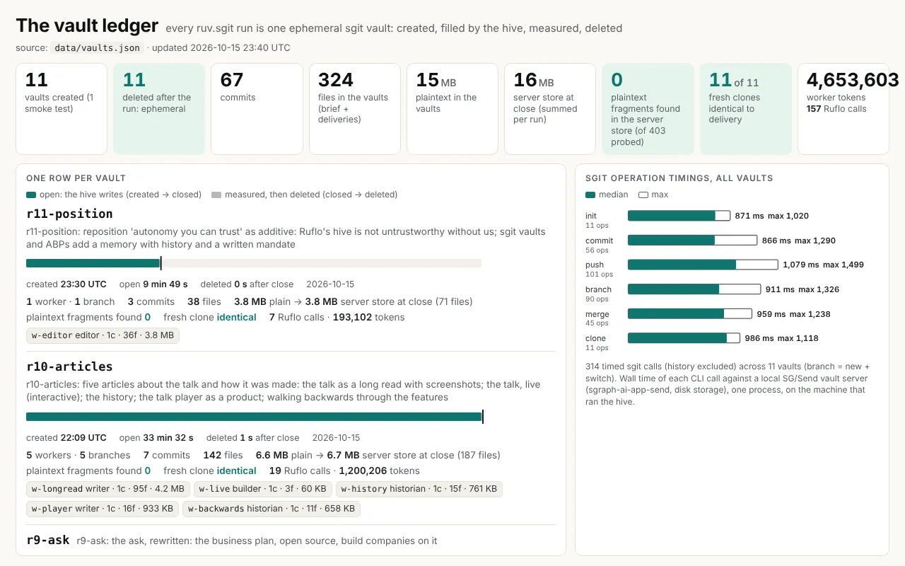
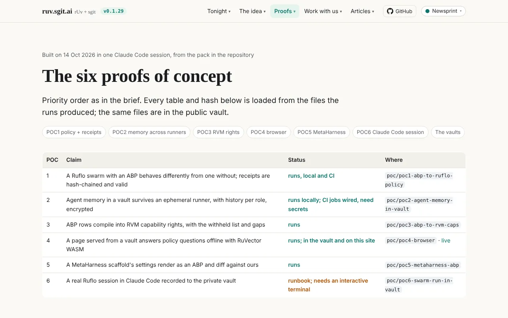
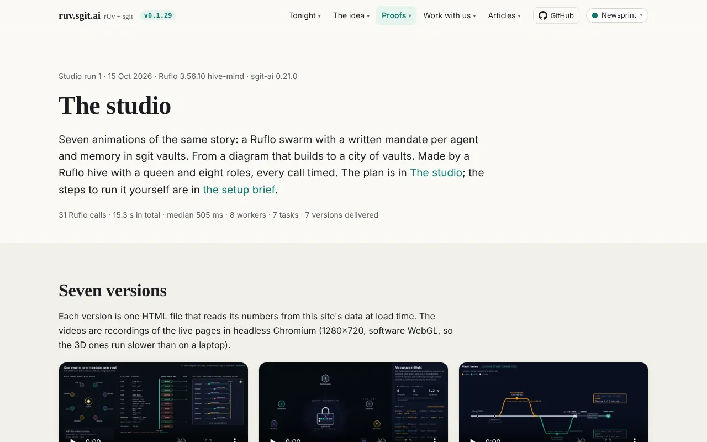
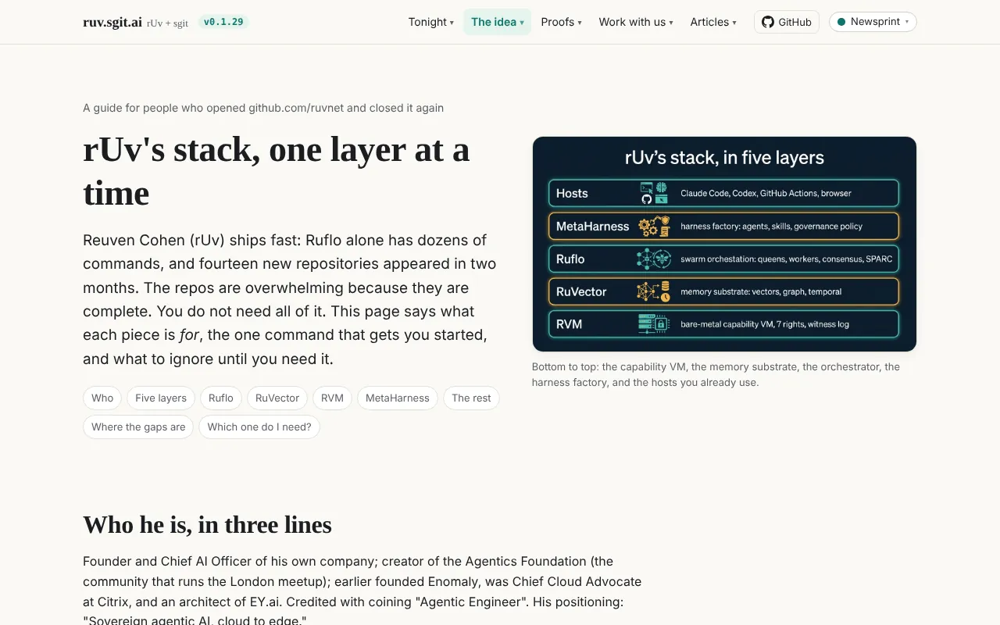
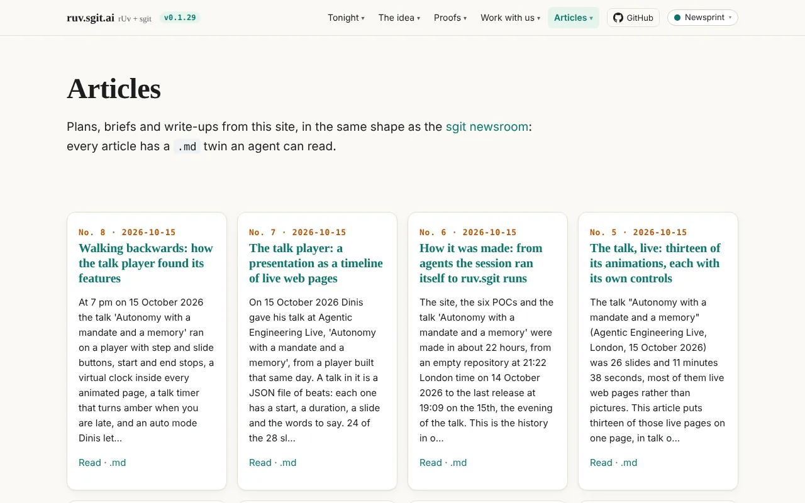
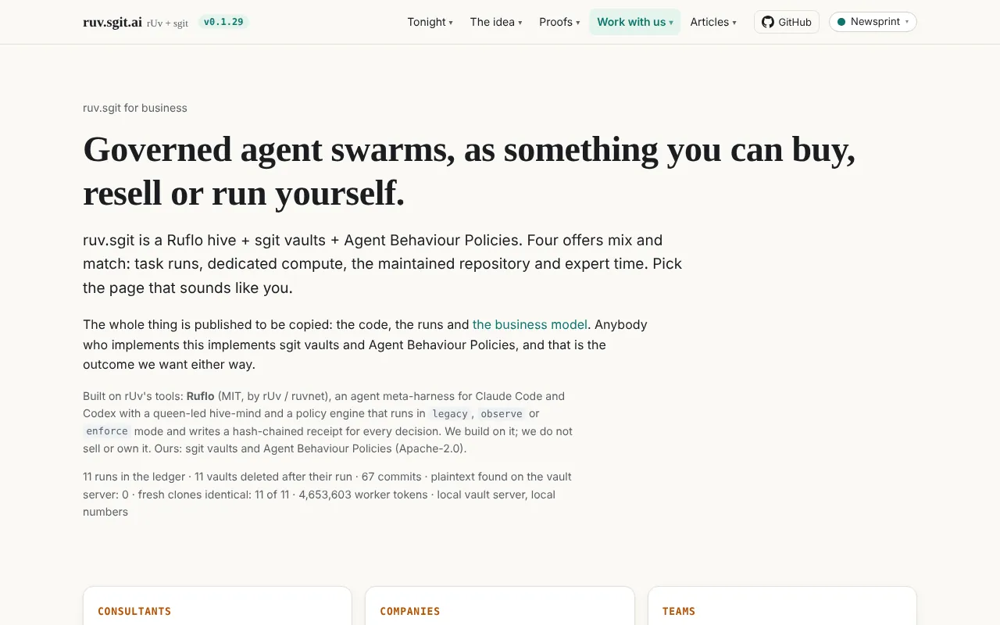
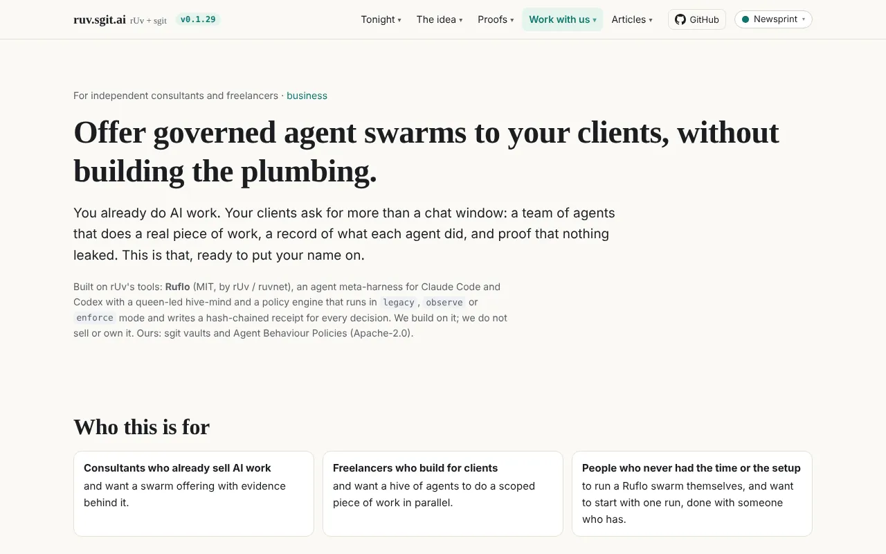
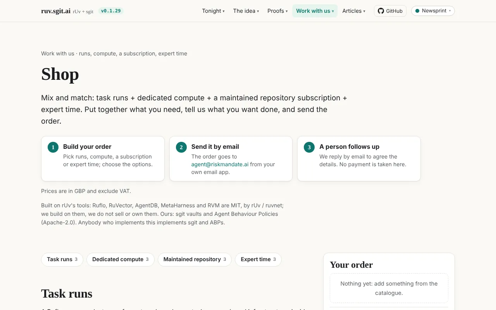
On 15 October Dinis gave the 7 pm talk at Agentic Engineering Live in London, an Agentics Foundation London evening that opened with rUv's keynote. "Autonomy with a mandate and a memory" was 26 slides and 11 minutes 38 seconds on a timeline, most of them live pages that read their numbers from the site's data files, and it ran itself while he spoke over it. The long read walks every slide; the talk, live puts thirteen of its animations on one page; how it was made tells the history from the record; the talk player and walking backwards cover the player and how its features arrived.
What it achieved, in terms this brief needs:
data/vaults.json, last written at 23:40 UTC on 15 October).Two releases after the talk set up this phase:
And on 16 October, newsroom.sgit.ai published Agentics, ready to sell, which Dinis described as "the beginning of mapping that workflow". Its argument, in brief:
This brief follows that article and changes one thing: it replaces the article's proposed "small platform share" with Dinis's rule of an equal split between the parties (see the rules of engagement, and open question 6).
ruv.sgit.ai becomes the site that offers the ruv.sgit service: agent work done by a Ruflo hive under a written mandate per role, with an sgit vault per job as the record the client keeps, delivered by people, through a small marketplace of providers. Dinis's words: "we now want to sell those services the way we are describing".
Three things change and one does not:
Dinis named them: "the people that want to buy this service; the consultants and the service companies that want to be part of our marketplace; and the people that want to learn more about ruv.sgit, which then could become one of the other two."
| Buyers | Providers | Learners | |
|---|---|---|---|
| Who | Teams and companies that want agents doing real work, with a record of what they did | Independent consultants, freelancers and service companies who want to deliver agentic engagements on this stack | People who saw the talk, use rUv's tools, or want to understand ruv.sgit |
| What they want | A first result without a large commitment; to know who will do the work; to keep their code and data | Clients, a method they can trust, and fair, simple terms | To understand it, try it, and follow what happens |
| What the site gives them | The engagement path, the four offers with prices, the providers, the proof | The rules of engagement, how it works, the playbooks, the application | The articles, the talk, the studio, replicate, the setup brief |
| Call to action | Order in the shop, or write for a free conversation | Apply to join (the waiting list) | Read, try it locally, keep me posted |
What they want. Someone to make agents do a real piece of their work, with a record they can show their own security, risk or legal people, at a price they can say yes to without a procurement round.
What the site gives them. One page, For clients, that starts with the engagement path (a conversation, a first run, expert time, a pilot, a maintained setup), then the four offers, then the providers who deliver them, then the proof (the ledger and POC1), then what stays theirs: their code, their data, their vault. Today's pages for companies and internal teams become two sections of it, because the differences between them (reselling, white label, an internal service) are about how they use the result, not about what they buy.
Call to action. Two buttons: Order in the shop (as today: an emailed order to agent@riskmandate.ai, no payment, a person replies) and Ask for a free conversation (an email with a short template). The shop gains one optional field, preferred provider (no preference, or one of the listed providers).
What they want. Work they can deliver well, a method and tooling they do not have to build, clear terms about money and ownership, and a fair way in.
What the site gives them. For providers: why join, the rules of engagement in full, how an engagement runs and who does what, the founding providers, the steps to join, and the playbooks (the setup brief, replicate, the business plan, the runner). Today's page for consultants, with its three ways (do it yourself, white label, custom), maps onto the rules directly: doing it yourself is rule 2, white label is "whoever has the client bills", and custom is rule 8.
Call to action. Apply to join: the provider application, which today puts you on the waiting list.
What they want. To know what ruv.sgit is, see it work, and try it without asking anyone.
What the site gives them. Learn: what ruv.sgit is (today's home page content, kept), rUv's stack by use case, the use cases, the architecture, the studio, replicate, running it offline, the setup brief, and the articles. And Proof: the runs, the ledger, the POCs, the talk.
Call to action. Try it locally (replicate, or the offline run), and Keep me posted, a light sign-up by email. Every learner page ends with the two doors to the other audiences: "want it done for you?" and "want to deliver it?".
The marketplace starts with two people. The newsroom article introduced them: "Mondweep Chakravorty, co-founder of the Agentics Foundation's London chapter, which runs the meetups where all of this was shown, and me." It also says they are "not taking bookings yet: we need to align our diaries first, so for now the page will say register interest, not book." This brief keeps that: the cards say register interest until open question 4 is answered.
The cards below are the shape of the profile, not the profile. Nothing is filled in that is not already published; the rest is for Dinis and Mondweep to supply (open question 1).
| Field | Dinis Cruz | Mondweep |
|---|---|---|
| Name as shown | Dinis Cruz | Mondweep (the surname "Chakravorty" appears in the newsroom article; to be confirmed for this site) |
| Affiliation | to be supplied | the Agentics Foundation; the newsroom article describes him as "co-founder of the Agentics Foundation's London chapter" |
| Role here | founding provider; built this site with Claude Code and gave the talk | founding provider |
| Project types offered | to be supplied | to be supplied |
| Offers (runs, compute, repository, expert time) | to be supplied | to be supplied |
| Location, languages | to be supplied | to be supplied |
| Availability | register interest | register interest |
| Proof of work | the ledger and the runs on this site | to be supplied (a public vault or repository of a real run) |
| Photo, bio, links | to be supplied | to be supplied, only with his consent |
No photo, title or biography is invented for either of them, and nothing about Mondweep is published on this site beyond the line above until he has seen and agreed to his card.
This section is written as the page it will become (rules/index.html). Dinis's rules, in his order, with the details a provider and a client need. Where a detail is a proposal rather than his words, it is marked and listed as an open question.
The examples use the published prices in data/offers.json (GBP, excluding VAT). Direct costs paid to third parties (model tokens, compute) come off the top before the split, itemised, and go back to whoever paid them (proposed; open question 7).
| Case | Who brings the client | Who delivers | Who bills | The split |
|---|---|---|---|---|
| We bring the client, two parties | We do (Dinis) | Mondweep, with Dinis | We do: £1,500 for a day of expert time | £750 each |
| A provider brings the client | A provider | The provider, with us on the behaviour policy | The provider: £5,000 for a four-day pilot | £2,500 each; the provider pays us our half |
| Three parties | A provider | That provider, a second provider, and us | The provider who brought the client: £5,000 for the pilot | A third each: £1,666.67, £1,666.67 and £1,666.66 (the odd penny stays with whoever bills) |
| A company brings an existing project | The company | The company's team, with a provider | Agreed in writing before the work starts | Custom (rule 8) |
| Somebody does it without us | Them | Them | Them | Nothing to split, nothing to ask (rule 2) |
| What | Licence | Whose |
|---|---|---|
| Our code (this site, the runner, the ABP tools) | Apache-2.0 | ours, open |
| Materials and playbooks (articles, briefs, how-tos) | Creative Commons, proposed CC BY 4.0 | ours, open |
| Code created in engagements through us | Apache-2.0 | open, unless agreed otherwise in writing (rule 8) |
| The client's code and data | the client's own terms | the client's, proprietary |
| rUv's projects (Ruflo, RuVector, AgentDB, MetaHarness, RVM) | MIT | rUv / ruvnet |
This section becomes how-it-works/index.html. It follows the engagement path in the newsroom article and the four offers already on the site.
| Step | What happens | Price today | What the client keeps |
|---|---|---|---|
| 1. A conversation | What the client wants agents to do, and what they must never do | free | notes, and a proposed first run |
| 2. A first run | A task run on a real problem: a Ruflo queen and up to 5, 10 or 20 workers, no network access, materials provided up front | £10, £20 or £50 a run (£9, £17 or £40 with your own model key) | the run's vault |
| 3. Expert time | Two hours to steer it, or a day to write the behaviour policy for one team | £500 (about two hours) or £1,500 (a day) | the policy and the vault |
| 4. A pilot | Four days setting it up in the client's own environment | £5,000 | the setup, its policies and vaults |
| 5. Run it yourself | The maintained repository: the code that runs this, kept current | from £149 a month (£149, £499, £1,500) | the repository |
Dedicated compute (£21, £23 or £36 per eight-hour block) can be added to any step; it is designed, not built yet, and the reply to an order says so. The newsroom article's five project types (a first run with a guide; a behaviour policy for one team's agents; a four-day pilot; a talk or workshop built the way ours was; a review of an agent that is already running) are packages of these offers, and they become the catalogue on For clients.
| Who | Does |
|---|---|
| The client | Says what they want done and what must never happen; provides the materials; owns their code, data and the vault |
| The provider who has the client | Scopes the job, writes the brief with the client, bills, and is the client's single contact |
| The provider(s) who deliver | Write the behaviour policy per role, start the run, watch it, review the output and hand it over |
| The agents | A Ruflo queen and workers, each under its role's mandate, delivering into the run's vault |
| The marketplace (for now, the two founders) | Matches enquiries to providers, keeps the rules and the playbooks, reviews applications |
For now, by hand. An order or an enquiry arrives at agent@riskmandate.ai (a live agent answers; a person follows up). If it names a preferred provider, it goes to them. If not, the founders match it by project type, language, location and availability, and reply with one or two names. The client chooses. Nothing is automated, and the site says so.
Every job is a ruv.sgit run, the same way every material on this site was made:
During a job, two kinds of change happen. The client's own code and data go into the client's vault and stay there (rule 4). Everything else, a better playbook, a fix to the runner, a new behaviour-policy pattern, a reusable worker role, goes back to the public repositories as a pull request, with the client's name and data removed, and is credited to the provider who made it (rule 5). The changes list of each public repository then shows what the engagements taught us.
This section becomes join/index.html, linked from For providers and from the menu.
The form is built like the shop: a static page, no backend and no payment. Filling it in builds an email to agent@riskmandate.ai, opened in the applicant's own email app; a "copy as JSON" button copies the same application as JSON, for people whose email app does not open, or who want to keep it. Applications go on the waiting list; the newsroom article's six steps (apply, proof of work, peer review, an interview, a shadowed first pilot, standards) are how someone moves from the list to the providers page. Until there are enough members for peer review, the founders do steps two to four themselves (open question 10).
| Field | Required | Notes |
|---|---|---|
| Name | yes | as you want it shown |
| Company | no | if you apply as a company, the company's name |
| yes | where we reply | |
| Location | yes | city and country; for matching and time zones |
| What you deliver | yes | one paragraph |
| Which offers | yes | any of: task runs, dedicated compute, maintained repository, expert time; and any of the five project types |
| Rates | no | if you have them; the published prices apply otherwise |
| Languages | yes | the languages you can work in |
| Links | no | site, GitHub, LinkedIn, and a public vault or repository of a real run (proof of work) |
| How you heard | no | the same choices as the shop |
| Consent to publish your profile | yes, to be listed | a separate tick box: you agree that, once approved, your name, company, location, offers, languages and links are shown on the providers page; you can withdraw it by email at any time |
| Agreement to the rules of engagement | yes | a tick box linking to the rules |
The JSON the form copies:
{
"type": "provider-application",
"version": 1,
"name": "", "company": "", "email": "", "location": "",
"delivers": "", "offers": [], "project_types": [], "rates": "",
"languages": [], "links": [], "heard": "",
"consent_publish_profile": true, "agrees_rules": true,
"created": "2026-10-16T12:00:00Z"
}The email body is plain text, kept under 1,800 characters (the limit the shop already uses for mail links), with the JSON in full only in the copy.
Once an application is approved, and only with the consent tick, the provider is added to data/providers.json, and the providers page renders one card per entry from that file. The applications themselves never go into the repository: personal data stays out of git (open question 3). The first two entries are the founding providers, with only the fields they have confirmed.
A second, lighter form on the same page: an email address, an optional name, and what you are interested in (using it, delivering it, or just following). It builds a short email to agent@riskmandate.ai with the subject "Keep me posted", and the page also points to the newsroom's own newsletter for people who want the wider stream. There is no list software; replies are by hand for now (open question 3).
Dinis asked for the map: "map everything we need to change, because the URLs are going to change, the position is going to change, the menu is going to change". The source of truth for the current site is the inventory, site-map-2026-10-16.json.
| Current page | Today (menu group) | Decision | New place |
|---|---|---|---|
index.html | The idea: Overview | rewrite | New home: three doors, the path, the providers, the proof, the rules |
| (the current home's content) | move | learn/overview.html, "What ruv.sgit is", unchanged | |
ruv-stack.html | The idea | keep | Learn |
use-cases.html | The idea | keep | Learn |
architecture.html | The idea | keep | How it works, and Learn |
talk/index.html | Tonight | keep URL, rename | Proof: "The talk, 15 October 2026" instead of "Tonight's talk"; the text moves to the past tense |
talk/player.html | Tonight | keep | Proof: "Play the talk" |
talk/offline-10.html, talk/offline-5.html | (unlisted) | keep | unlisted, linked from replicate |
talk/slides/* (13 slides) | (unlisted) | keep | unchanged; they are the talk as given |
demo.html | Tonight | keep, unlist | off the menu, with a line at the top: "historical: the five-minute demo for 15 October 2026" |
replicate.html | Proofs; Tonight (offline) | keep | Learn |
ruv-sgit/index.html | Proofs | keep | Proof, and How it works ("one run, six steps") |
ruv-sgit/ledger/index.html | (unlisted) | keep, list | Proof: "The vault ledger" |
ruv-sgit/motion/, ruv-sgit/case/, ruv-sgit/define/* | (unlisted) | keep | unchanged; linked from ruv.sgit |
pocs.html | Proofs | keep | Proof |
app/index.html | Proofs | keep | Proof |
studio/index.html and studio/v1 to v7 | Proofs | keep | Learn |
business/index.html | Work with us | retire to a redirect | to clients/index.html |
business/companies.html | Work with us | retire to a redirect | to clients/index.html#companies |
business/teams.html | Work with us | retire to a redirect | to clients/index.html#teams |
business/consultants.html | Work with us | retire to a redirect | to providers/index.html |
shop/index.html | Work with us | keep, add a field | For clients; gains "preferred provider" |
articles/index.html and all eight articles | Articles; Work with us | keep | Learn; the business plan also under For clients |
articles/ruv-sgit-business-model.html | Work with us | keep, add a note | a line at the top pointing to the rules of engagement where they differ (the split) |
admin/versions.html | (version in the nav) | keep | unchanged |
vault/index.html | (unlisted) | keep | unchanged |
llms.txt | (footer) | rewrite | restructured around the three audiences |
New pages:
| New page | What it is |
|---|---|
clients/index.html | For clients: the path, the offers, the project types, the providers, the proof, what stays yours; sections #companies and #teams |
providers/index.html | For providers: why join, the founding providers, the list from data/providers.json, how to join |
rules/index.html | The rules of engagement, worked examples and licences |
how-it-works/index.html | The engagement path, who does what, matching, delivery, committing back |
join/index.html | The provider application (#provider) and keep me posted (#updates) |
proof/index.html | A hub: the runs, the ledger, the POCs, the live app, the talk |
learn/index.html | A hub: what ruv.sgit is, rUv's stack, use cases, architecture, the studio, replicate, the articles |
learn/overview.html | Today's home page content, moved |
data/providers.json | Approved providers, consented fields only |
assets/join.js | The two forms, built like shop/shop.js |
Today: Tonight · The idea · Proofs · Work with us · Articles. Proposed: For clients · For providers · How it works · Proof · Learn · Join.
| Group | Items |
|---|---|
| For clients | Overview · The shop · The offers and prices · For companies · For internal teams · The business plan |
| For providers | Overview · The providers · Rules of engagement · Apply to join |
| How it works | The engagement path · One run, six steps · Rules of engagement · Architecture |
| Proof | ruv.sgit runs · The vault ledger · The six POCs · Live app · The talk · Play the talk · The talk, live |
| Learn | What ruv.sgit is · All articles · rUv's stack · Use cases · The studio · Replicate · Run it offline · Set it up: the brief |
| Join | Apply as a provider · Keep me posted · Contact: agent@riskmandate.ai |
The footer's "work with us" link points to For clients, and gains "join as a provider". The version in the nav, the GitHub link and the theme picker stay as they are.
data/vaults.json when the page loads (never pasted), and links to the POCs and the talk.GitHub Pages serves files; it has no server-side redirects. So every URL that leaves the menu keeps a file:
<meta http-equiv="refresh" content="0; url=…">, a <link rel="canonical"> to the new page, a visible sentence ("This page has moved to …") and a plain link, for browsers and readers that ignore the refresh. The stubs keep the site's chrome, so they look like the site for the second they are seen./talk/ and everything under it, /articles/ and every article, /ruv-sgit/ and the ledger, /shop/, /pocs.html, /replicate.html and /data/*.json do not move. They are linked from the talk, the newsroom article, the five articles and other sites./business/. That stub stays for good.learn/overview.html.site/build/validate.py learns about stubs: a stub must have a refresh, a canonical and a link that resolve. And a new check runs every URL in site-map-2026-10-16.json and fails if any of them no longer exists, as a page or a stub.These are the changes that will surprise someone who knew the site on 16 October. Each goes into the release notes.
learn/overview.html; the URL / now speaks to buyers, providers and learners.business/index.html, consultants.html, companies.html and teams.html stop holding content; their text is merged into For clients and For providers.llms.txt is restructured.** Agents that read it by section will find new sections.Five ruv.sgit runs, in order, each after the one before is reviewed. Each run has a spec in poc/ruv-sgit/runs/, a vault per run, a mandate per role, and a ledger entry, as every run so far. None of them changes the ledger, the talk, the player, the slides or the articles' content.
| Run | Purpose | Workers |
|---|---|---|
| r13-ia | Information architecture: the menu, the hubs, the redirects | architect (the menu in assets/site.js, the footer), redirector (the four stubs, learn/overview.html), checker (the validator: stubs, and every URL in the inventory) |
| r14-home | The new home and the audience pages | home (the new index.html), clients (clients/index.html, merging companies and teams), providers (providers/index.html, merging consultants) |
| r15-rules | The rules, how it works, the provider profiles | rules (rules/index.html from this article's rules), process (how-it-works/index.html), profiles (data/providers.json, the two founding cards, confirmed fields only) |
| r16-join | The forms | forms (join/index.html, assets/join.js), shop (the preferred provider field in shop/shop.js) |
| r17-editor | The editor pass and the record | editor (every new page against these rules: British English, plain words, additive, accurate), indexer (llms.txt, README, admin/versions.json with the breaking changes), archivist (the same fifteen screenshots again, as the "after" picture, and this article to v1.0.0 with its changes list) |
r13-ia
python3 site/build/validate.py passes, including the new checks.site-map-2026-10-16.json loads, either as itself or as a stub whose refresh and link reach an existing page./business/ shows "This page has moved" and lands on For clients.r14-home
r15-rules
rules/index.html match the approved version of this article word for word.r16-join
mailto:agent@riskmandate.ai link with a body under 1,800 characters, and "copy as JSON" copies JSON that parses and has every required field.r17-editor
validate.py passes; every new page is in llms.txt.admin/versions.json has the release with the breaking changes listed.data/vaults.json, the ledger page and every ruv.sgit page and animation.data/offers.json**, unless Dinis changes them (open question 5).Each has a proposed answer. A "yes" accepts it; anything else, write the change in.
To ask a question, buy, or apply to join: agent@riskmandate.ai.
Dinis Cruz's dictated brief of 16 October 2026 (quoted where his words are used); the newsroom article Agentics, ready to sell (16 October 2026), read the same day; this site at v0.1.29: site/assets/site.js (the menu), site/business/*.html, site/shop/, site/data/offers.json, site/data/vaults.json, site/llms.txt, README.md, site/admin/versions.json, the business plan and the five articles of 15 October; the inventory site-map-2026-10-16.json; and the run spec poc/ruv-sgit/runs/r12-next-phase.spec.json.